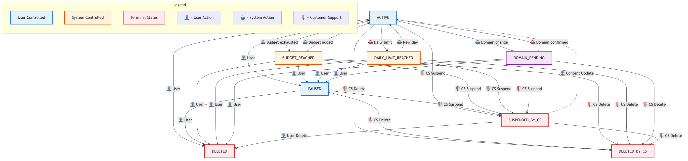

Advertisements¶
Advertisements or ads are the main resource on the Sellside API. You can create (calling POST /ad), update and delete them (PUT /ad/{adId} and PUT /ad/{adId}/status/{status} respectively), and get a list of your ads matching various criteria (GET /ad/) Through the API you only have access to your own ads. Ads from other advertisers are not accessible to you.
Note
We introduced a new monetary unit of micros across our product more recently, where one cent equals 10000 micros. One micro is 1-millionth of the local tenant currency (Euro). This will allow for a higher level of granularity when specifying the cost (per click).
We are substituting the current CPC values across the API with a bid value, and the actual (incurred) billed cost value - this to allow for better differentiation between the two. This split between bid and billed values is currently utilised for an experimental feature which adjusts the bid value for the quality of the traffic.
This new micros unit, as well as the distinction between bid and billed cost, are a core part of the product. We will gradually deprecate any fields with cents and local currency units across the API. Check our extensive Migration Guide for more information on how to transition to using micros units.
Ad Status Guide¶
Ad statuses control whether your ads are eligible for serving and provide insight into why ads might not be active. Understanding these statuses is essential for managing your advertising campaigns effectively through our API.
{kind=link}

Ad status values¶
Understanding who controls ad status changes is essential for managing your advertising campaigns effectively. There are three types of actors that can affect ad status:
Seller/API Partner Actions¶
These statuses are controlled by you (the seller) or your API partners acting on your behalf:
Status |
Meaning |
Ad Serving |
Available Actions |
|---|---|---|---|
|
Ad is running and eligible for serving |
✅ Serves |
Can pause or delete via API |
|
Ad is temporarily stopped by you |
❌ Does not serve |
Can activate or delete via API |
|
Ad is permanently removed by you |
❌ Does not serve |
Terminal state - cannot be changed |
Admin/CS Actions¶
These statuses are set by Customer Support, Account Managers, or Platform Administrators for policy enforcement:
Status |
Meaning |
Ad Serving |
Resolution |
|---|---|---|---|
|
Ad violates platform policies and is suspended by support |
❌ Does not serve |
Contact support AND update ad content |
|
Ad permanently removed for policy violations by support |
❌ Does not serve |
Terminal state - cannot be restored |
System Actions¶
These statuses are set automatically by our system based on conditions and cannot be directly changed via API:
Status |
Meaning |
Ad Serving |
Resolution |
|---|---|---|---|
|
Total ad budget is exhausted (automatic) |
❌ Does not serve |
Increase total budget |
|
Daily ad budget is exhausted (automatic) |
❌ Does not serve |
Wait for new day or increase daily budget |
|
New domain requires verification (automatic anti-phishing protection) |
❌ Does not serve |
Verify domain via email (Marktplaats Console only) |
Status precedence rules¶
Important
When multiple conditions affect an ad, we show the most actionable status for you as the advertiser.
Non-budget statuses take priority¶
If your ad has multiple issues, we prioritize showing you the status you can directly act upon:
Your Ad State |
Budget Condition |
Status Shown |
Why |
|---|---|---|---|
You paused it |
Daily budget reached |
|
You can unpause it |
Domain pending (Marktplaats Console) |
Budget reached |
|
You need to verify domain |
Currently active |
Daily budget reached |
|
Budget is the blocking issue |
Currently active |
Total budget reached |
|
Budget is the blocking issue |
Note
Budget-related statuses (BUDGET_REACHED, DAILY_LIMIT_REACHED) are only shown when your ad would otherwise be ACTIVE.
Status change workflows¶
Seller/API Partner Workflows¶
Create ad →
ACTIVATED(if valid) orDOMAIN_PENDING(if new domain)Pause campaign → Set status to
PAUSEDvia APIResume campaign → Set status to
ACTIVATEDvia APIEnd campaign → Set status to
DELETEDvia API (terminal)
System Automated Workflows¶
Budget exhaustion (automatic):
Total budget exhausted →
BUDGET_REACHEDDaily budget exhausted →
DAILY_LIMIT_REACHED(resets at midnight)
Domain verification (automatic anti-phishing):
URL changed to unverified domain →
DOMAIN_PENDINGVerify via email link → All pending ads for that domain become
ACTIVATED
Note
Domain verification activates all pending ads for that domain, regardless of previous status.
Note
Domain protection only available on Marktplaats Console interface.
Admin/CS Workflows¶
Policy enforcement (manual review):
Policy violations detected → Admin sets
SUSPENDED_BY_CSorDELETED_BY_CSRecovery from suspension → Requires content updates AND support approval
Permanent deletion →
DELETED_BY_CSis terminal, cannot be restored
Campaign status impact¶
Important
For an ad to be visible to buyers, both the ad status AND campaign status must allow serving:
Campaign must be active (not paused or out of budget)
Ad must have a serving status (
ACTIVEand not affected by budget/domain/CS restrictions)
Campaign status affects ad visibility (whether ads appear to buyers), not ad status itself. Individual ad statuses remain unchanged when campaign status changes.
Key behaviors:
Campaign paused or out of budget → All ads in campaign become invisible to buyers
Individual ad statuses are never modified by campaign status changes
When campaign returns to active → Ads return to visibility based on their individual statuses
Common workflows¶
Budget management¶
Daily budget reached →
DAILY_LIMIT_REACHED(resets at midnight)Total budget reached →
BUDGET_REACHED(increase budget to resume)
Domain change¶
New domain →
DOMAIN_PENDING(Marktplaats Console only)Verify via email → Becomes
ACTIVE
Handling suspensions¶
SUSPENDED_BY_CS→ Update content and contact support →ACTIVE
API integration best practices¶
Status polling¶
Check status regularly for critical ads
Budget statuses change as spend accumulates
DOMAIN_PENDINGrequires immediate action
Error handling¶
API rejects invalid status transitions
DELETEDandDELETED_BY_CSare terminal statesSUSPENDED_BY_CSrequires content updates, not status changes
Monitoring recommendations¶
Alert on budget status changes
Monitor
DOMAIN_PENDINGemail notificationsTrack
SUSPENDED_BY_CSfor policy issues
Troubleshooting¶
Ad not serving?¶
Check ad status - only
ACTIVEads serveCheck campaign status - must be active
Look for
BUDGET_REACHED,DAILY_LIMIT_REACHED,DOMAIN_PENDING,SUSPENDED_BY_CS
Status won’t change?¶
Check who controls the status:
Terminal states:
DELETEDandDELETED_BY_CScannot be changedSystem-controlled:
BUDGET_REACHED,DAILY_LIMIT_REACHED,DOMAIN_PENDINGcannot be set via API - resolve the underlying conditionAdmin-controlled:
SUSPENDED_BY_CSrequires support approval after content updates
Unexpected status changes?¶
Identify the actor that caused the change:
System actions: Budget exhaustion and domain verification happen automatically
Admin actions: Policy reviews can result in
SUSPENDED_BY_CSorDELETED_BY_CSCheck your API calls: Verify your integration isn’t making unintended status changes
Support¶
Technical integration: API documentation
Policy questions: Customer support
Domain verification: Check email
Price Types¶
Each advertisement has a price type which determines the type of transaction the seller would like to perform. The following table lists the valid price types and their descriptions.
Note
Please notice the deprecated price types, after the grace period they will be migrated to SEE_DESCRIPTION and support will be removed from the API.
PRICE_TYPE |
Price required? |
Deprecated |
Description |
|---|---|---|---|
BIDDING |
no |
no |
Request a bid on the ad starting from 0 EUR. |
BIDDING_FROM |
yes |
no |
Request a bid with a starting price > 0 EUR. price must contain a value in the interval of |
FIXED_PRICE |
yes |
no |
Request a fixed price. price must contain a value in the interval of |
FREE |
no |
no |
Request no price. |
NEGOTIABLE |
no |
yes |
Request a negotiation between buyer and seller. |
SEE_DESCRIPTION |
no |
no |
Additional information is in the description of the ad. |
SWAP |
no |
yes |
Request an exchange of one item for another. |
CREDIBLE_BID |
no |
no |
Request for any reasonable offer. |
ON_DEMAND |
no |
yes |
Price is communicated on request. |
NOT_APPLICABLE |
no |
yes |
Price is not applicable for this ad (e.g. a Jobs ad). |
RESERVED |
no |
yes |
Flag for transaction in progress. |